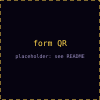

Submit one prompt now: something you would really ask a model at work.
Tonight's arena ranks models on it before we finish.
Arian Pasquali · orq.ai

say: while people sit down, one prompt each, anything you would actually ask a model at work. No names, only the prompt column is kept.
Build your own arena, this evening, on your prompts.
git clone https://github.com/orq-ai/orq-arena && cd orq-arena uv tool install '.[tui]' orq-arena run --config configs/budget_8.yaml --prompts your_prompts.jsonl --tui
say: check the raise figure the week of the talk (the brainstorm recalled about $100M in May 2025 and $150M in January 2026). The point is not that LMArena is wrong; it is that it is not yours. Then show the QR again.
candidates: - model_id: openai/gpt-5.4-mini - model_id: google/gemini-3.7-flash - model_id: anthropic/claude-haiku-4-5-20251001 # ... 8 in this pool, one per provider match: max_rounds: 5 # prompts sampled per match
orq-arena run --config demo.yaml \ --prompts meetup.jsonl --tui
say: no bracket, no seeding, no luck of the draw; every pair meets on every sampled prompt; cost grows with the square. Click 12: 66 pairs, 330 rounds, each judged by three judges in both seat orders.
ORQ_API_KEY.gateway.base_url at any other endpoint and the run opts out of the router entirely.gateway: base_url: https://my.orq.ai/v3/router # the default; any other URL opts out candidate_max_tokens: 2048
say: said before anyone asks. Yes, it is our router, and it is what makes one key and one price table possible. Your own provider keys plug in with BYOK; base_url is the exit.
prompt: "My async scraper hits a 429 after a few seconds. How do I stay under the rate limit?"
judges: [typesafe/jev-latest, perplexity/pplx-decider-v1-27b, openai/gpt-6-luna] min_successful_judges: 2 # quorum
say: every judge reads the pair twice, A first, then B first. If it changes its answer when the seats swap, the vote was about the seat, not the answer, and it abstains. Two valid votes make a quorum, and the most common answer wins; fewer votes, or a split with no single top answer, and the round is inconclusive, which is thrown out, not counted as a tie. Fleiss kappa on the report is how often the judges agree beyond chance. Let three people in the room be the judges.
say: round robin, everybody met everybody. But the jury threw out the inconclusive rounds, so what is left is uneven: two models, both 6 of 8 on the rounds that counted. Which is better? Hands up, then click one.
say: give every model a strength. The chance A beats B is A's share of the two strengths. Start them all equal and nudge until the predicted wins match what we saw. That is the whole algorithm.
Chess? Same curve, same scale. Chess Elo is Bradley-Terry fitted one game at a time with a step size K, because players change over years. Models do not change between round 3 and round 40, so we fit every round at once: no K, no order effects. LMArena calls it Elo; it has been Bradley-Terry since 2023, and so is ours.
say: we saw 68 rounds, not 68 thousand. Reshuffle them with replacement, refit, repeat. The spread is how sure we are. While bands overlap it is a tier, not a rank. The report says this on every run.
orq-arena report battles.jsonl # ELO with these bands, every run
judge_api: decisions judge_abstain_below: 0.6 # default off
Measured against a reference jury on 140 rounds (docs/research/llm-judges-vs-decision-models.md). The panel was picked on these two pools. Decision models give no reasons and read 32k to 64k tokens of context: long transcripts and agent traces still want an LLM panel.
say: an LLM judge writes you a paragraph and you parse a letter out of it. A decision model answers the question with probabilities, in about half a second, billed on input only. Same panel size, 40% more rounds decided (77 against 55), better agreement with a $70 per 1k rounds reference jury. Then drag the floor: confidence buys agreement and costs rounds. Say the caveat before anyone asks, and one more: the reference jury seats grok-4.6 and this pool seats a grok, so pool 2's κ 0.92 may be flattered; pool 1, with no such overlap, gave 0.87 against 0.83.
one record from battles.jsonl (examples/quickstart), trimmed:
{
"prompt_text": "Compute 2^100 mod 1000 without a calculator. Explain the technique you use.",
"model_a": "claude-sonnet-4-6",
"model_b": "deepseek-chat",
"majority_verdict": "A",
"judge_votes": [
{"model": "anthropic/claude-haiku-4-5-20251001", "vote": "A", "flipped": false},
"..."
]
}
say: this is the data. Preference pairs on your prompts, with the judges' votes and whether they flipped. Every run writes it; nothing else to collect.
audience slice: on your prompts alone, this is the order.orq-arena rejudge /tmp/meetup/battles.jsonl --judge-api llm \ --judge anthropic/claude-haiku-4-5-20251001 \ --judge google/gemini-3.5-flash-lite --judge openai/gpt-5.4-nano
say: the audience slice needs 20 decided audience rounds; under 20 decided audience rounds the slice does not show; say the overall ladder is on seed plus audience and move on. The rejudge prints a Spearman against the decision panel's ranking: close to 1 means the cheap jury told the same story. Skip it if time is short.
Nothing in the arena takes an agent today.
candidates: # sketch, not shipped - model_id: openai/gpt-5.4-mini - agent_key: support-triage # an orq agent, judged on its final answer
say: first chapter to cut if the slot is short. No claim the tool cannot back: the arena ranks models today; agents are the near tier, trajectories the far one.
orq-arena run --config configs/budget_8.yaml --prompts your_prompts.jsonl --tui
say: thank the room, show their prompts' ladder one last time if it is still up, then questions.
| right, space | next slide |
| left | previous slide |
| 0 to 9 | jump to chapter |
| s | show or hide say lines |
| ? | this list |